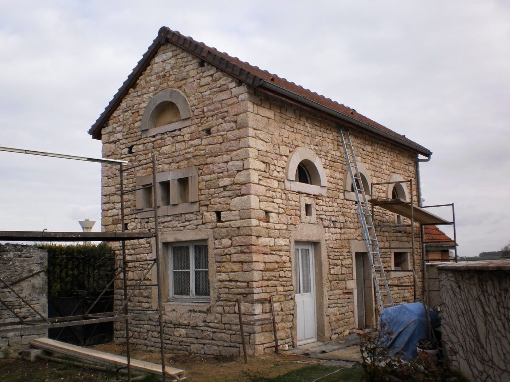
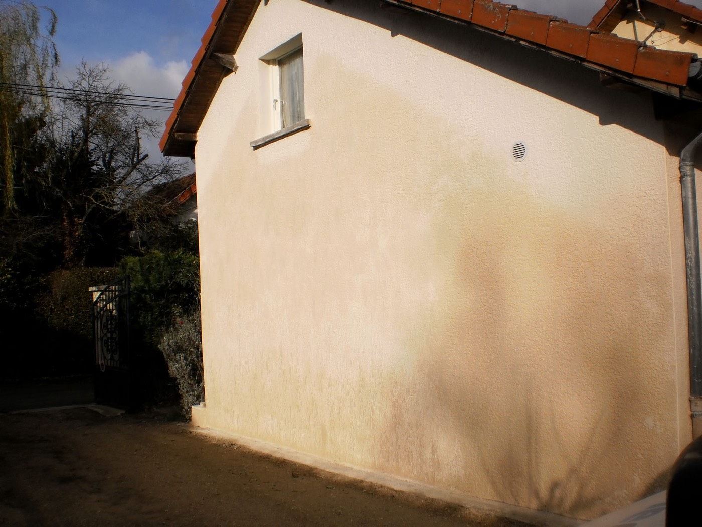
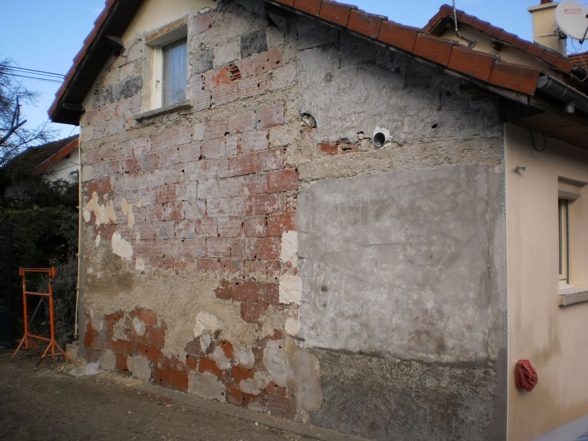
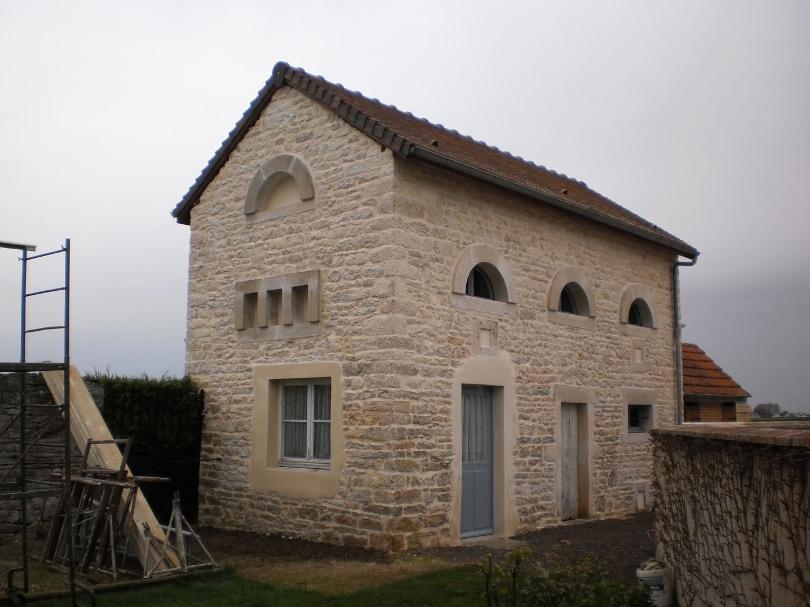
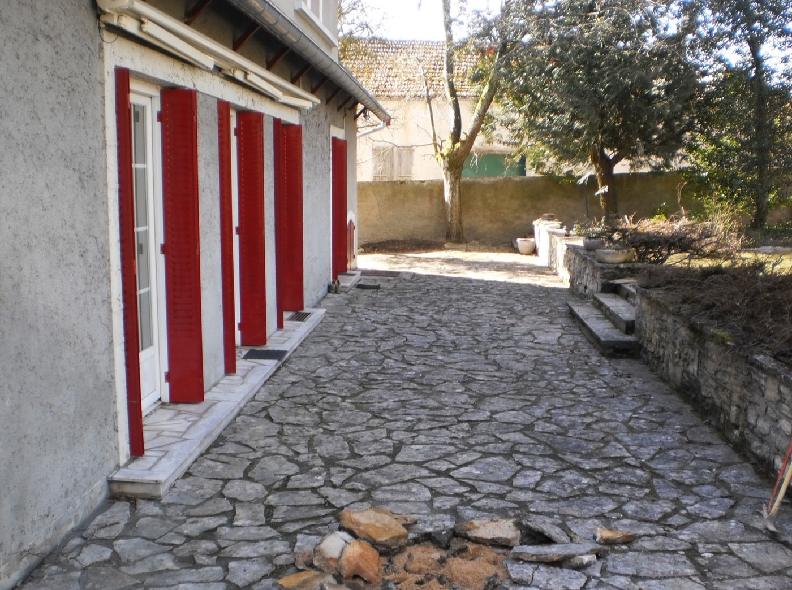
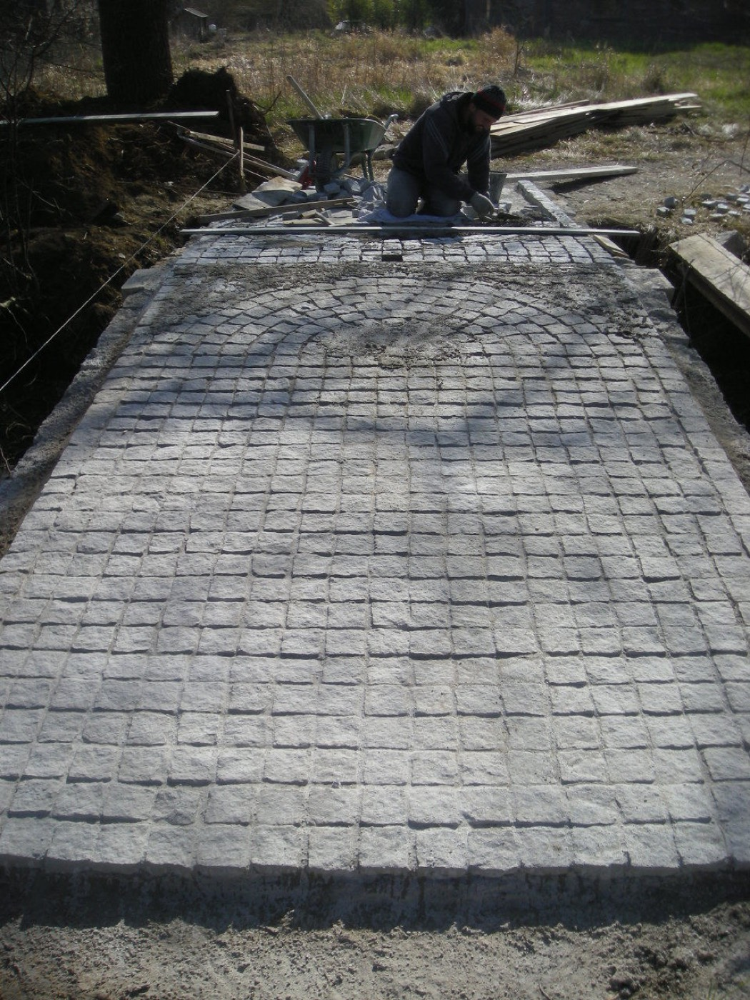
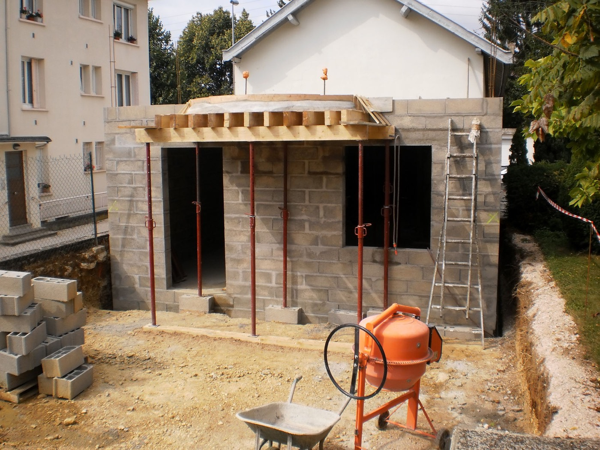
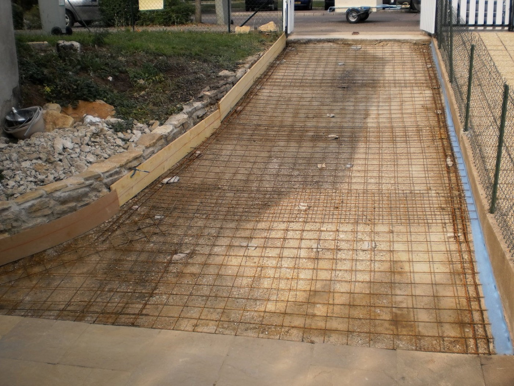
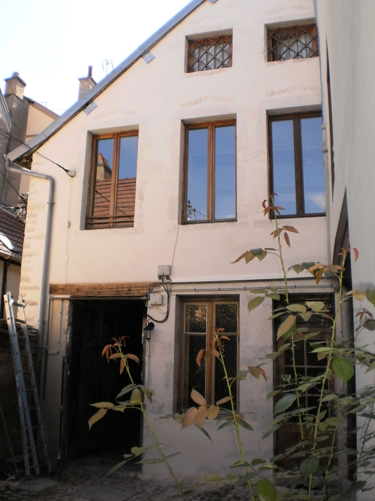
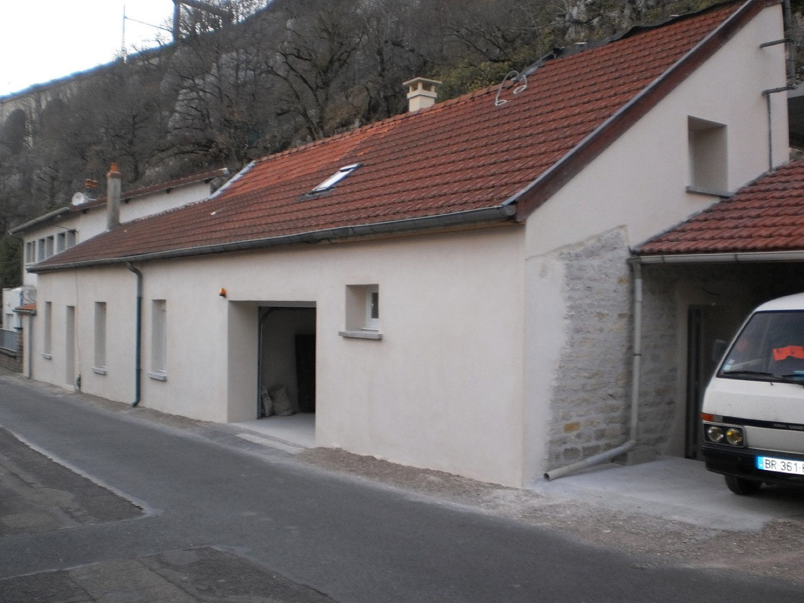

Bâtir neuf,
restaurer l'ancien.
Artisan maçon à Dijon depuis 2011. Du mur de clôture à la cave voûtée, dans les règles de l'art.
2011installé à Dijon
Pierreet chaux
Bétonet parpaing

Avant, après.
Faites glisser le curseur sur la photo pour voir le chantier avant et après mon passage.


AvantAprèsDeux façons de bâtir,
un même soin.
Les techniques d'aujourd'hui pour construire vite et solide, celles d'hier pour respecter les maisons anciennes.
Contemporain
Construire
- Béton armé et coffrages
- Parpaing, béton cellulaire
- Brique monomur
- Dalles, pavage, murettes
- Construction de pavillons
Ancestral
Restaurer
- Pierre de taille et moellons
- Enduits et joints à la chaux
- Briquette
- Arches et caves voûtées
- Restauration du patrimoine
Du plus simple au plus ambitieux
Aucun chantier n'est trop petit, et les plus difficiles sont ceux que je préfère.
- Murette, enduit, dalle les classiques
- Création d'ouverture dans un mur porteur
- Extension, pavillon du sol au toit
- Coffrages spéciaux sur mesure
- Cave voûtée, escalier en colimaçon le savoir-faire rare
Sur mes chantiers







Parlons de votre projet
Je passe voir le chantier et je vous fais un devis gratuit.
06 27 91 67 8428 rue de la Manutention, 21000 Dijon